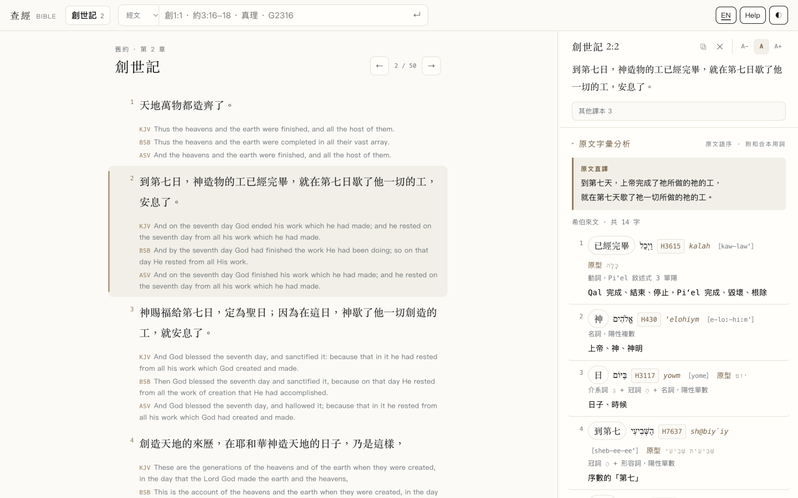
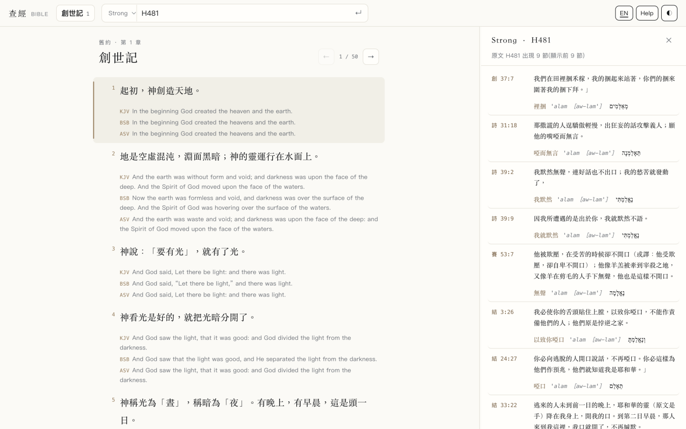
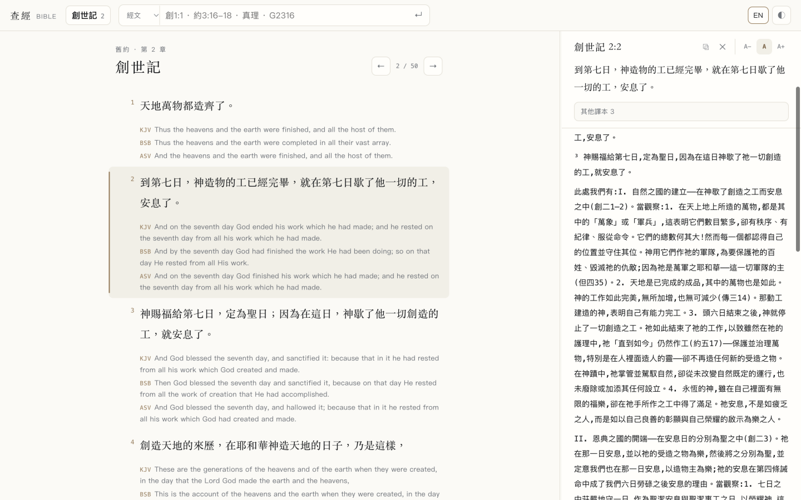

這個頁面是什麼why a landing page, not the app
這裡是靜態專案頁。應用程式本身不能放在這裡跑，原因有兩個，都很實際。
1. 需要後端。經文、原文分析與註解由一個本機的 Python 服務（標準庫 HTTP 伺服器）讀 SQLite 提供，靜態託管只能送檔案，無法執行它。
2. 資料不能公開散布。Strong 字典、CBOL 註解與串珠來自信望愛站，授權僅限個人研讀使用；聖經資料庫本身約 282 MB。這些都不在 repo 裡，也不適合放上公開網站。
2. 資料不能公開散布。Strong 字典、CBOL 註解與串珠來自信望愛站，授權僅限個人研讀使用；聖經資料庫本身約 282 MB。這些都不在 repo 裡，也不適合放上公開網站。
所以：程式碼公開、畫面公開，實際使用請在自己電腦上跑（見下方安裝）。
畫面screenshots



功能features
| 區塊 | 內容 |
|---|---|
| 經文 | 和合本；可切換顯示 KJV／BSB／ASV |
| 原文字彙分析 | 原文語序逐字：和合本用詞、原文字、Strong 編號、英文音譯與音標、詞性字形、原型、字義 |
| 原文直譯 | 依原文語序的直譯句，用來對照和合本怎麼調整語序 |
| CBOL 註解重點 | 中文註解，四級大綱自動排版，內文經文參照可點 |
| 註解 | Matthew Henry／J.F.B.／Barnes／Tyndale；中文譯本＋英文原文 |
| 串珠 | 相關經文，點擊直接跳到該章該節 |
| 搜尋 | 經文參照、關鍵字、原文詞、Strong 編號 |
鍵盤 ↑ ↓ 換節、← → 換章、/ 搜尋、Esc 關閉。字級 A−／A／A+ 三級，選擇會記住。
在自己的電腦上跑run locally
需要 Python 3.11 以上，以及一份依信望愛站授權自行取得的資料集（見 repo 的 README）。
git clone https://github.com/keithwux/bible-study.git
cd bible-study
export BIBLE_DATA=/path/to/your/bible-data
python3 server.py # http://127.0.0.1:8790沒有 build step、沒有套件安裝：一個 Python 檔當後端，一個 HTML 檔當前端。資料全部在本機，斷網可讀；只有「原文字彙分析」第一次看某節時需要連線，之後自動快取。
授權licence
- 程式碼：自由使用與修改。
- 經文：和合本與 KJV／BSB／ASV 的授權各異，請在你取得的授權範圍內使用。
- Strong 編號與字典、CBOL 註解、串珠：來自信望愛站（bible.fhl.net），僅供個人研讀，不得再散布。
- 註釋書：Matthew Henry、Jamieson-Fausset-Brown、Barnes 為公有領域；Tyndale Study Bible 為 CC BY-SA 4.0。
本專案與信望愛站無隸屬關係。